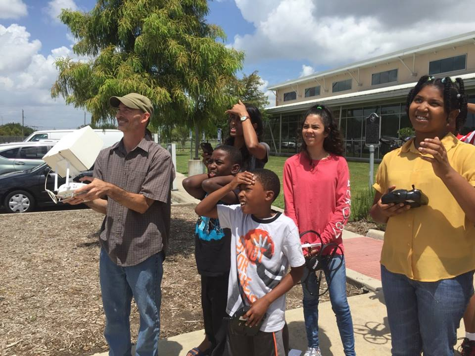

News
Appropriate Development Technology (ADTINC) has been involved in promoting access to technology education to bridge income inequality. The objective of the organization is to provide access to latest and relevant technology throughout the year in libraries, YMCA and community centers in minority and disadvantaged areas to produce minority engineers and scientists in order to break the cycle of poverty. On this page you can find current and past news articles related to our organization.
News Articles
Photos from first camp event


